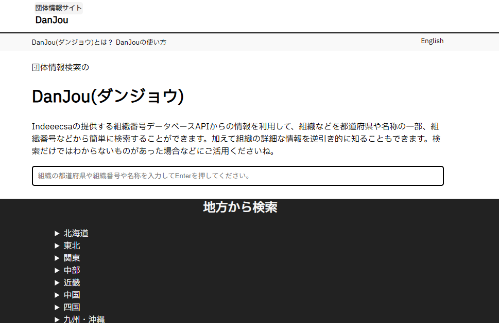
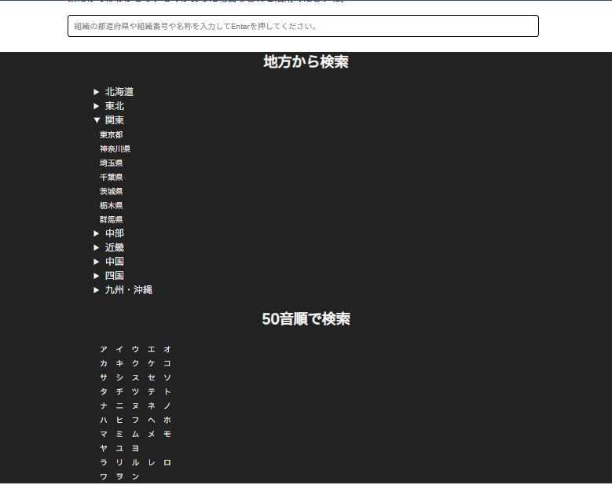

DanJouの使い方
ここでは当サービスDanJouの使い方を詳しく解説していきます。
検索方法について
ここでは、まずトップページ(https://danjou.pages.dev/)での、組織の検索方法についてご案内します。
1
団体名・名称から検索する方法
Danjouのサイトでは、組織を団体名や、名称(屋号)から検索することができます。
やり方は、まずトップページへアクセスします。

真ん中の入力欄に、「組織を団体名や、名称(屋号)」を、可能であれば正式名称で入力してください。(前方一致検索にも対応しています。)
そうしましたら、Enterキー、もしくは「確定」ボタンをタップして検索してください。
これで、組織を団体名や、名称(屋号)から検索する手順は完了です。2
組織番号から検索する方法
Danjouのサイトでは、組織番号からも簡単に検索することができます。
やり方は、まずトップページへアクセスします。
(組織番号は完全一致のみ検索処理がされます。半角13桁で正しく入力していただきますようお願い申し上げます。)
そうしましたら、Enterキー、もしくは「確定」ボタンをタップして検索してください。
これで、組織番号から検索する手順は完了です。3
所在地から検索する方法
Danjouのサイトでは、組織の所在地からも簡単に検索することができます。
やり方は、まずトップページへアクセスします。

少し下にスクロールし、「地方から検索」のセクションを見つけたら、地方をクリックすると都道府県の一覧が表示されます。クリック(タップ)すると、検索処理がされ、結果を確認できます。
これで、所在地から検索する手順は完了です。検索ボックスに直接入力して検索する方法
組織の都道府県がわかっている場合、組織の名称や、団体名、組織番号を入力する入力欄に、同様に所在地(都道府県)を入力していただき、Enterまたは「確定」ボタンを押していただくと検索可能です。
4
50音で検索
Danjouのサイトでは、どうしても団体名などが正式に判明しない場合でも、50音で検索することができます。
やり方は、まずトップページへアクセスします。
検索したいものをクリック(タップ)すると、検索処理がされ、結果を確認できます。
これで、50音から検索する手順は完了です。